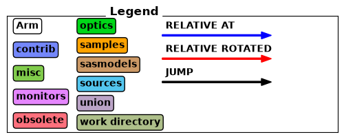
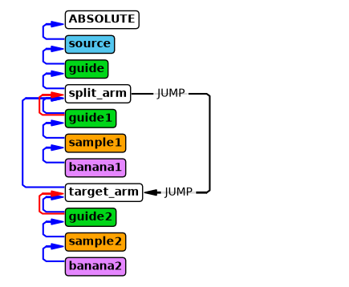
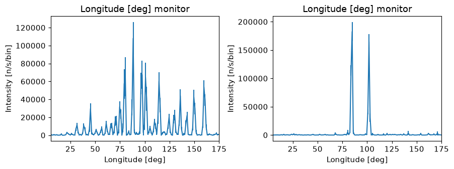

Advanced McStas features: JUMP#
In this notebook we will look at JUMP and how it can be used to control the sequence of execution of components. One instance where this is useful is if a guide splits into two. Consider an instrument with the following components:
source
main guide
guide1
sample1
detector1
guide2
sample2
detector2
After the main guide, if the ray hits the opening of guide1 the ray will continue to sample1 and detector1 as expected, but if it misses the opening of guide1, it will just be absorbed and never reach guide2 later in the component sequence. One possible solution is to use a JUMP statement, which jumps to another place in the component sequence. The target component must be an Arm, and no coordinate transformations are done, so the simplest solution is to have the Arm conincide with the component with the JUMP statement.
source
main guide
arm A JUMP arm B WHEN ray hits guide2 entrance
guide1
sample1
detector1
arm B (same position and rotation of arm A)
guide2
sample2
detector2
Here we build such an instrument with a few notes on the syntax along the way.
import mcstasscript as ms
instrument = ms.McStas_instr("python_tutorial", input_path="run_folder")
src = instrument.add_component("source", "Source_simple")
src.xwidth = 0.12
src.yheight = 0.12
src.focus_xw = guide_opening_w = 0.1
src.focus_yh = guide_opening_h = 0.06
src.dist = 1.5
src.flux = 1E13
src.lambda0 = instrument.add_parameter("wavelength", value=5.0,
comment="Wavelength in [Ang]")
src.dlambda = "0.001*wavelength"
guide = instrument.add_component("guide", "Guide_gravity", AT=[0,0,1.5], RELATIVE=src)
guide.w1 = guide_opening_w
guide.h1 = guide_opening_h
guide.w2 = guide_opening_w
guide.h2 = guide_opening_h
guide.l = guide_length = 15
guide.m = 4.0
guide.G = -9.82
Adding the reference arm#
We here add an arm just after the exit of the main guide which will be the component that performs the JUMP under certain circumstances. The McStas syntax for such a JUMP statement would be:
JUMP reference WHEN condition
We will call the arm we jump to for target_arm, and our condition is that the neutron is on the left side, so x<0. That means our JUMP statement would be:
JUMP target_arm WHEN (x<0)
In McStasScript this is added with the set_JUMP method, that takes a string for what to set after JUMP.
start_arm = instrument.add_component("split_arm", "Arm")
start_arm.set_AT([0,0, guide_length + 3E-3], RELATIVE=guide)
start_arm.set_JUMP("target_arm WHEN (x<0)")
print(start_arm)
COMPONENT split_arm = Arm(
)
AT (0, 0, 15.003) RELATIVE guide
JUMP target_arm WHEN (x<0)
Adding the first daughter instrument#
We then add the left side, which correspond to x>0, so this is the case where no jump was performed and the sequence of components runs as normal.
guide1 = instrument.add_component("guide1", "Guide_gravity")
guide1.set_AT([0.25*guide_opening_w,0,0], RELATIVE=start_arm)
guide1.set_ROTATED([0, 1, 0], RELATIVE=start_arm)
guide1.w1 = 0.5*guide_opening_w
guide1.h1 = 0.5*guide_opening_h
guide1.w2 = 0.5*guide_opening_w
guide1.h2 = 0.5*guide_opening_h
guide1.l = guide1_length = 10
guide1.m = 2.5
guide1.G = -9.82
sample1 = instrument.add_component("sample1", "PowderN")
sample1.set_AT([0,0,guide1_length+0.5], RELATIVE=guide1)
sample1.radius = 0.015
sample1.yheight = 0.05
sample1.reflections = '"Na2Ca3Al2F14.laz"'
banana1 = instrument.add_component("banana1", "Monitor_nD", RELATIVE=sample1)
banana1.xwidth = 2.0
banana1.yheight = 0.3
banana1.filename = '"banana1.dat"'
banana1.options = '"theta limits=[5 175] bins=150, banana"'
Adding the second daughter instrument#
Now we need to add the target_arm that rays jump to when they go to the right side of the guide split. This is in the exact same position of the previous arm, to avoid the need for a coordinate transformation which is not performed automatically when using JUMP statements.
After that we add a second daughter instrument with a different sample.
target_arm = instrument.add_component("target_arm", "Arm")
target_arm.set_AT([0,0,0], RELATIVE=start_arm)
guide2 = instrument.add_component("guide2", "Guide_gravity")
guide2.set_AT([-0.25*guide_opening_w,0,0], RELATIVE=target_arm)
guide2.set_ROTATED([0, -1, 0], RELATIVE=target_arm)
guide2.w1 = 0.5*guide_opening_w
guide2.h1 = 0.5*guide_opening_h
guide2.w2 = 0.5*guide_opening_w
guide2.h2 = 0.5*guide_opening_h
guide2.l = guide1_length = 15
guide2.m = 2.5
guide2.G = -9.82
sample2 = instrument.add_component("sample2", "PowderN")
sample2.set_AT([0,0,guide1_length+0.5], RELATIVE=guide2)
sample2.radius = 0.015
sample2.yheight = 0.05
sample2.reflections = '"Cu.laz"'
banana2 = instrument.add_component("banana2", "Monitor_nD", RELATIVE=sample2)
banana2.xwidth = 2.0
banana2.yheight = 0.3
banana2.filename = '"banana2.dat"'
banana2.options = '"theta limits=[5 175] bins=150, banana"'
Instrument diagram showing JUMP#
The instrument diagram helps visualize what happens with a JUMP statement, as JUMPS are visualized. From the diagram, it can be seen that the two daughter instruments exist in parallel after the “split_arm” component.
instrument.show_diagram()


Running the simulation#
instrument.set_parameters(wavelength=2.8)
instrument.settings(ncount=5E6, output_path="data_folder/mcstas_JUMP", suppress_output=True, mpi="auto")
data = instrument.backengine()
ms.make_sub_plot(data)

Interpretation of the data#
We see that each daughter instrument have beam and show the different powder patterns as expected.
The McStas instrument file#
We here show the generated McStas instrument file in order to clarify how this would be accomplished without the McStasScript API.
instrument.show_instrument_file()
/********************************************************************************
*
* McStas, neutron ray-tracing package
* Copyright (C) 1997-2008, All rights reserved
* Risoe National Laboratory, Roskilde, Denmark
* Institut Laue Langevin, Grenoble, France
*
* This file was written by McStasScript, which is a
* python based McStas instrument generator written by
* Mads Bertelsen in 2019 while employed at the
* European Spallation Source Data Management and
* Software Centre
*
* Instrument: python_tutorial
*
* %Identification
* Written by: Python McStas Instrument Generator
* Date: 13:54:59 on July 24, 2026
* Origin: ESS DMSC
* %INSTRUMENT_SITE: Generated_instruments
*
* !!Please write a short instrument description (1 line) here!!
*
* %Description
* Please write a longer instrument description here!
*
*
* %Parameters
* wavelength: [unit] Wavelength in [Ang]
*
* %Link
*
* %End
********************************************************************************/
DEFINE INSTRUMENT python_tutorial (
wavelength = 2.8 // Wavelength in [Ang]
)
DECLARE
%{
%}
INITIALIZE
%{
// Start of initialize for generated python_tutorial
%}
TRACE
COMPONENT source = Source_simple(
yheight = 0.12, xwidth = 0.12,
dist = 1.5, focus_xw = 0.1,
focus_yh = 0.06, lambda0 = wavelength,
dlambda = 0.001*wavelength, flux = 10000000000000.0)
AT (0, 0, 0) ABSOLUTE
COMPONENT guide = Guide_gravity(
w1 = 0.1, h1 = 0.06,
w2 = 0.1, h2 = 0.06,
l = 15, m = 4.0,
G = -9.82)
AT (0, 0, 1.5) RELATIVE source
COMPONENT split_arm = Arm()
AT (0, 0, 15.003) RELATIVE guide
JUMP target_arm WHEN (x<0)
COMPONENT guide1 = Guide_gravity(
w1 = 0.05, h1 = 0.03,
w2 = 0.05, h2 = 0.03,
l = 10, m = 2.5,
G = -9.82)
AT (0.025, 0, 0) RELATIVE split_arm
ROTATED (0, 1, 0) RELATIVE split_arm
COMPONENT sample1 = PowderN(
reflections = "Na2Ca3Al2F14.laz", radius = 0.015,
yheight = 0.05)
AT (0, 0, 10.5) RELATIVE guide1
COMPONENT banana1 = Monitor_nD(
xwidth = 2.0, yheight = 0.3,
options = "theta limits=[5 175] bins=150, banana", filename = "banana1.dat")
AT (0, 0, 0) RELATIVE sample1
COMPONENT target_arm = Arm()
AT (0, 0, 0) RELATIVE split_arm
COMPONENT guide2 = Guide_gravity(
w1 = 0.05, h1 = 0.03,
w2 = 0.05, h2 = 0.03,
l = 15, m = 2.5,
G = -9.82)
AT (-0.025, 0, 0) RELATIVE target_arm
ROTATED (0, -1, 0) RELATIVE target_arm
COMPONENT sample2 = PowderN(
reflections = "Cu.laz", radius = 0.015,
yheight = 0.05)
AT (0, 0, 15.5) RELATIVE guide2
COMPONENT banana2 = Monitor_nD(
xwidth = 2.0, yheight = 0.3,
options = "theta limits=[5 175] bins=150, banana", filename = "banana2.dat")
AT (0, 0, 0) RELATIVE sample2
FINALLY
%{
// Start of finally for generated python_tutorial
%}
END